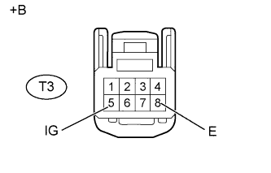

СИСТЕМА КОНДИЦИОНИРОВАНИЯ (для моделей с автоматическим кондиционером) > Цепь панели управления задним кондиционером |
| 1.ПРОВЕРЬТЕ ЖГУТ ПРОВОДОВ И РАЗЪЕМ (ПАНЕЛЬ УПРАВЛЕНИЯ СИСТЕМОЙ КОНДИЦИОНИРОВАНИЯ - БЛОК УПРАВЛЕНИЯ СИСТЕМОЙ КОНДИЦИОНИРОВАНИЯ) |
Отсоедините разъем G24 блока управления.
Отсоедините разъем T3 системы управления.
Измерьте сопротивление в соответствии со значениями, приведенными в таблице ниже.
| Контакты для подключения диагностического прибора | Условие | Заданные условия |
| T3-3 (RLIN) - G24-13 (RLIN) | Всегда | Менее 1 Ом |
| T3-3 (RLIN) - масса | Всегда | 10 кОм или более |
|
| ||||
| OK | |
| 2.ПРОВЕРЬТЕ ЖГУТ ПРОВОДОВ И РАЗЪЕМ (ПАНЕЛЬ УПРАВЛЕНИЯ СИСТЕМЫ КОНДИЦИОНИРОВАНИЯ – АККУМУЛЯТОРНАЯ БАТАРЕЯ И МАССА) |
|  |
Отсоедините разъем T3 системы управления.
Измерьте напряжение в соответствии со значениями, приведенными в таблице.
| Контакты для подключения диагностического прибора | Положение переключателя | Заданные условия |
| T3-5 (IG) - T3-8 (E) | Зажигание выключено | Менее 1 В |
| T3-5 (IG) - T3-8 (E) | Зажигание включено | 11-14 В |
Измерьте сопротивление в соответствии со значениями, приведенными в таблице ниже.
| Контакты для подключения диагностического прибора | Условие | Заданные условия |
| T3-8 (E) - масса | Всегда | Менее 1 Ом |
| *a | Вид спереди разъема со стороны жгута проводов: (к блоку управления системой кондиционирования в сборе) |
|
| ||||
| OK | |
| 3.ЗАМЕНИТЕ БЛОК УПРАВЛЕНИЯ СИСТЕМОЙ КОНДИЦИОНИРОВАНИЯ В СБОРЕ |
Замените панель управления системы кондиционирования новой или заведомо исправной (Нажмите здесь).
Управляя системой кондиционирования с панели управления, убедитесь в ее работоспособности.
|
| ||||
| OK | ||
| ||